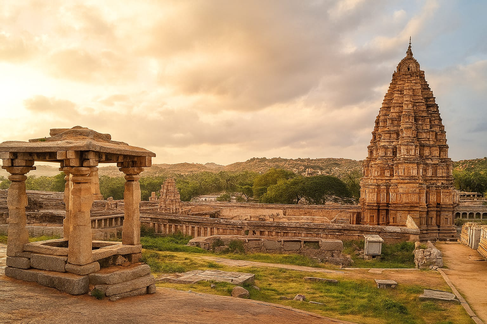
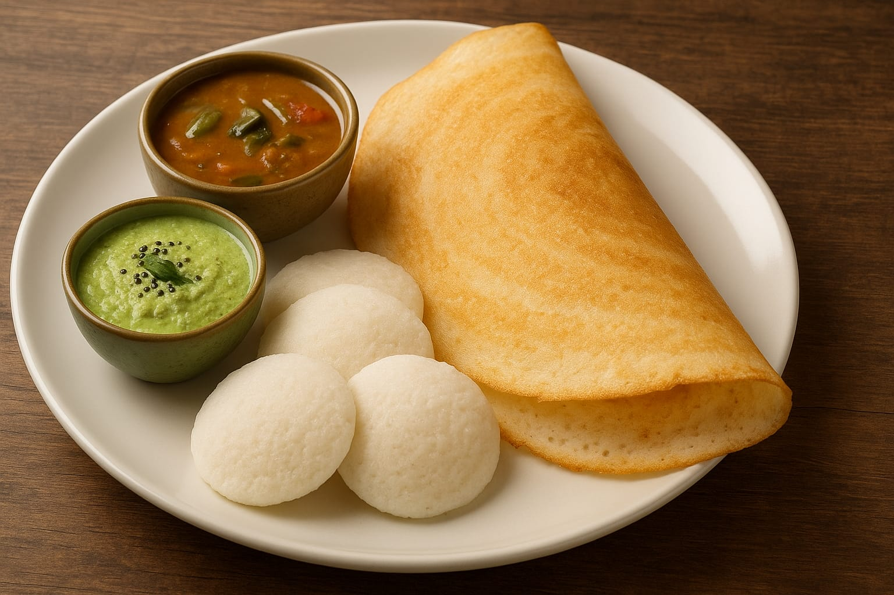

Welcome to Chennai
The Gateway to South India - Temples, Beaches, and Cuisine
Explore Places Explore Foods

The Gateway to South India - Temples, Beaches, and Cuisine
Explore Places Explore Foods

Small national park within the city, home to wildlife and greenery.
📍 View on Map
Soft steamed rice cakes and crispy crepes, staple breakfast items.
Shop: Murugan Idli Shop, Triplicane

Rich South Indian coffee served in traditional style.
Shop: Cafe Madras, Mount Road
Crunchy spiral snack made from rice flour and spices.
Shop: Aasife Murukku, Triplicane
Fried lentil doughnut, often served with chutney and sambar.
Shop: Sangeetha Veg Restaurant, T Nagar

Traditional South Indian rice and lentil dish.
Shop: Ratna Cafe, Triplicane

Steamed chickpeas snack popular at temples.
Shop: Marina Beach Stalls